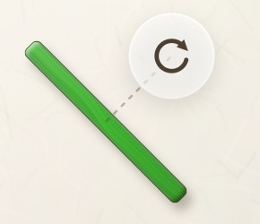

Support
Etwas klappt nicht, oder du hast einen Wunsch? Schreib an tillhess+murmel@hey.com. Hilfreich sind dein Gerät, die Version von iOS oder iPadOS und ein Bildschirmfoto.
Häufige Fragen
Warum ist am Anfang nur Holz Lila offen?
Die zehn Level von Holz Lila zeigen jedes Holzteil einmal. Sind alle geschafft, geht der Rest auf: die übrigen Farben von Holz, das freie Bauen, das Murmelglas und, in ihrer Zeit, die Welt Weihnachten.
Wie drehe ich ein Teil?
Tippe das Teil an. Daneben erscheint ein runder Griff: Antippen dreht einen Schritt im Uhrzeigersinn, Ziehen dreht weiter. In Lila und Grün sind die Schritte 45° groß, in Blau 15°, in Rot und Schwarz 5°. Beim freien Bauen wählst du das unter „Weitere“ (die drei Punkte) bei „Schwierigkeit“.

Wo ist meine aufgehängte Wand?
In der Galerie, im Bild „Sammlung“. Es hängt dort, sobald du beim freien Bauen unter „Weitere“ das erste Mal „An die Wand hängen“ gewählt hast. Antippen holt die Wand ins freie Bauen zurück; hast du ein Level daraus gemacht, beginnt das Level.
Wann gibt es Weihnachten?
Jedes Jahr vom 1. Dezember bis 31. Januar, nach dem Datum deines Geräts, sobald Holz Lila geschafft ist. Danach verschwindet das Bild aus der Galerie. Was du geschafft hast, bleibt gespeichert.
Warum passiert nichts, wenn ich auf Abräumen oder Löschen tippe?
Das ist die Kindersicherung. Halte den runden Knopf gedrückt, bis sich der Ring geschlossen hat, etwa eineinhalb Sekunden. Danach lässt sich das Abräumen nicht zurücknehmen.
Warum lässt sich die Wand nicht mehr verschieben oder zoomen?
Dann ist die Ansicht gesperrt. Tippe oben links auf das Schloss, um sie zu entsperren. „Ansicht einpassen“ unter „Weitere“ zeigt wieder die ganze Wand.
Warum höre ich nichts?
Mrml Roll richtet sich nach dem Stummschalter deines Geräts und nach der eingestellten Lautstärke. Musik oder ein Hörbuch laufen beim Spielen weiter.